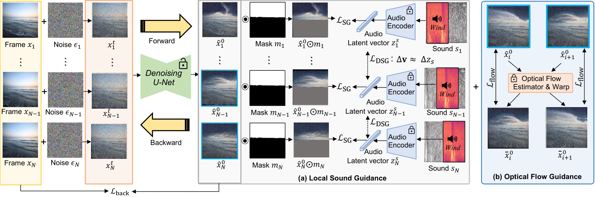

Overview of Soundini

Soundini consists of two gradient-based guidance for diffusion: (a) Local Sound guidance and (b) Optical flow guidance. In (a), we match the appearance of the sampled frame with the sound in the mask region using the loss $\mathcal{L}_\text{SG}$ and $\mathcal{L}_\text{DSG}$. First, we minimize the cosine distance loss $\mathcal{L}_\text{SG}$ between the denoised frame and the sound segments in the audio-visual latent space. Additionally, the loss term $\mathcal{L}_\text{DSG}$ aligns the variation of frame latent representation and that of sound, capturing the transition of sound semantic and reaction. In (b), our optical flow guidance $\mathcal{L}_\text{flow}$ allows the sampled video to maintain temporal consistency by measuring the mean squared error between warped and sampled frames using optical flow. In particular, gradually increasing the influence on the loss $\mathcal{L}_\text{flow}$ helps to stably sample the temporally consistent video. Background reconstruction loss $\mathcal{L}_\text{back}$ allows the background to be close to the source video.